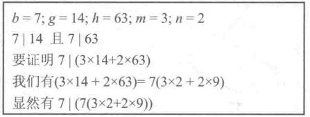
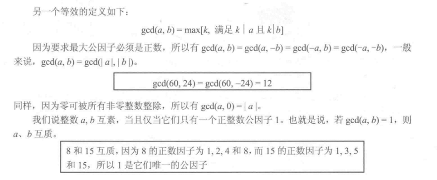

# 数论基础
# 整除性和带余除法
# 整除性
定义：
a、b 是两个整数，b≠0 ，如果存在一个整数 m 使等式 a=m*b 成立，则称 b 整除 a，记为 b|a,a 是被除数，b 是除数。
a/b 记为 b|a a 除以 b 记为 b 整除 a
性质：
- 若 a|1， 则 a=±1。
- 若 a|b 且 b|a，则 a=±b。
- 任何不等于零的数整除 0。
- 若 a|b 且 b|c，则 a|c。
11|66 且 66|198 => 11|198 - 对任意整数 m，n，若 b|g 且 b|h，则可得出 b|（mg+nh）。
之所以得出最后一条结论，是因为：
- 若 b|g，存在 g1，使得 g 可以表示为 g=b*g1
- 若 b|h, 则存在 h1，使得还可以表示为 h=b*h1
所以：mg + nh = mbg1 + nbh1 = b * (mg1 + nh1)
得出 b 整除 mg+nh。
例题

# 带余除法
对给定的任意一个正整数 n 和任意非负整数 a, 若用 n 除 a, 得到整数商 q 和整数余数 r, 则满足以下关系式:a = qn + r, 0 ≤ r < n; q = |(a|b)|
# 欧几里得算法
# 最大公约数
最大公约数，也称最大公因数、最大公因子，指两个或多个整数共有约数中最大的一个。
对于整数 a,b,m, 若满足 a=mb, 则称非零整数 b 是 a 的一个因子。我们用 gcd (a,b) 来表示 a 的最大公因子。a 和 b 的最大公因子是能同时整除 a 和 b 的最大整数。另外，定义 gcd (0,0)=0。
更正式的描述是，正整数 c 称为 a 和 b 的最大公因子，如果
(1) c 是 a 和 b 的因子。
(2) a、b 的因子都是 c 的一个因子。
